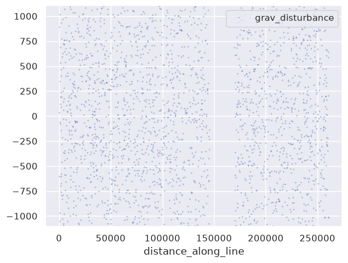
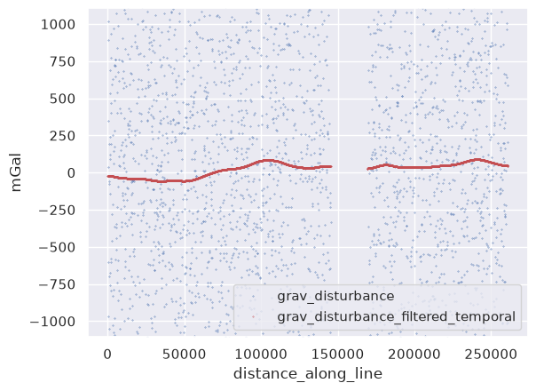
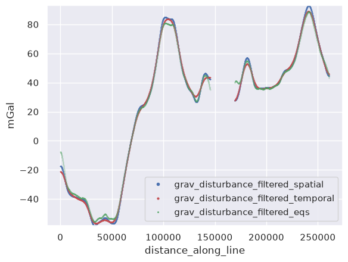
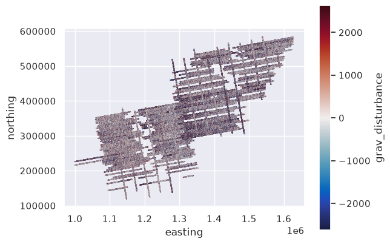
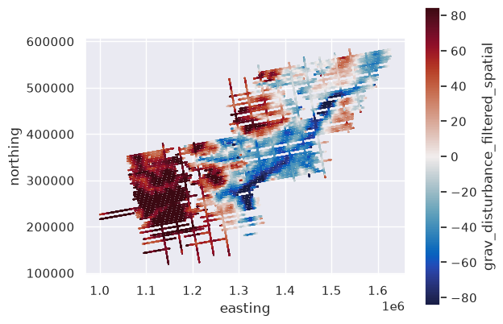
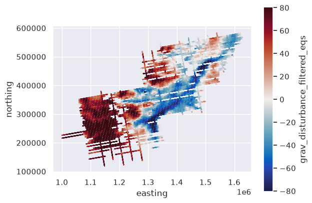

Filtering data in 1D#
[1]:
# %load_ext autoreload
# %autoreload 2
import cmocean
import numpy as np
import pandas as pd
import verde as vd
import airbornegeo
[2]:
data_df = pd.read_csv("data/AGAP_gravity_survey_processed.csv")
data_df = data_df[
[
"easting",
"northing",
"line",
"unixtime",
"grav_disturbance",
"distance_along_line",
"height",
]
]
data_df = data_df.sort_values(["line", "unixtime"]).reset_index(drop=True)
data_df.head()
[2]:
| easting | northing | line | unixtime | grav_disturbance | distance_along_line | height | |
|---|---|---|---|---|---|---|---|
| 0 | 1.000024e+06 | 226237.330771 | 1 | 1.229507e+09 | 1186.4 | 0.000000 | 4156.1 |
| 1 | 1.000083e+06 | 226246.631269 | 1 | 1.229507e+09 | 342.1 | 59.842447 | 4156.0 |
| 2 | 1.000142e+06 | 226255.809132 | 1 | 1.229507e+09 | -1965.9 | 119.693401 | 4156.1 |
| 3 | 1.000201e+06 | 226264.969079 | 1 | 1.229507e+09 | 820.0 | 179.545645 | 4156.4 |
| 4 | 1.000260e+06 | 226274.156809 | 1 | 1.229507e+09 | 3198.0 | 239.285174 | 4156.6 |
[3]:
# extract a single line from the survey
line_df = data_df[data_df.line == 4]
# Create a survey for the single-line demo
line_survey = airbornegeo.Survey(
line_df,
line_column="line",
distance_column="distance_along_line",
)
Filter a line#
Spatial filtering#
We can perform 1D filtering based on the distance along the flight line.
[4]:
line_survey.filter_line(
filter_width=19_000, # 19 km low pass gaussian filter
filter_type="lowpass",
filter_shape="gaussian",
data_column="grav_disturbance",
filter_by_column="distance_along_line",
result_column="grav_disturbance_filtered_spatial",
pad_width_percentage=10,
)
[4]:
airbornegeo.Survey 3,762 rows × 8 columns
Column attributes
| line | line |
| line_type | not set |
| distance | distance_along_line |
| time | not set |
| height | not set |
| latitude | not set |
| longitude | not set |
CRS & metadata0 metadata entries
| crs | None |
Statistics0/8 computed — access an attribute or call .describe()
| region | not computed |
| line_counts | not computed |
| line_lengths | not computed |
| total_length | not computed |
| median_line_lengths | not computed |
| line_azimuths | not computed |
| mean_line_azimuths | not computed |
| median_line_spacings | not computed |
IntersectionsNone
None — call create_intersection_table()
Datafirst 5 rows
| easting | northing | line | unixtime | grav_disturbance | distance_along_line | height | grav_disturbance_filtered_spatial | |
|---|---|---|---|---|---|---|---|---|
| 8591 | 1.316050e+06 | 392090.546753 | 4 | 1.230570e+09 | 1971.6 | 0.000000 | 3574.5 | -17.269885 |
| 8592 | 1.315990e+06 | 392078.637888 | 4 | 1.230570e+09 | 1878.6 | 61.614338 | 3574.3 | -17.272291 |
| 8593 | 1.315929e+06 | 392066.728534 | 4 | 1.230570e+09 | -602.0 | 123.228587 | 3574.0 | -17.279394 |
| 8594 | 1.315869e+06 | 392054.833235 | 4 | 1.230570e+09 | -2875.9 | 184.956734 | 3573.7 | -17.291215 |
| 8595 | 1.315808e+06 | 392042.937442 | 4 | 1.230570e+09 | 39.0 | 246.684793 | 3573.5 | -17.307745 |
[5]:
maxabs = vd.maxabs(line_df.grav_disturbance, percentile=60)
ax = line_df.plot.line(
"distance_along_line",
"grav_disturbance",
style="b.",
ms=0.6,
ylim=(-maxabs, maxabs),
)
ax = line_df.plot.line(
"distance_along_line",
"grav_disturbance_filtered_spatial",
style="r.",
ms=0.6,
ax=ax,
ylim=(-maxabs, maxabs),
)
ax.set_ylabel("mGal")
---------------------------------------------------------------------------
KeyError Traceback (most recent call last)
File ~/airbornegeo/.pixi/envs/default/lib/python3.14/site-packages/pandas/core/indexes/base.py:3641, in Index.get_loc(self, key)
3640 try:
-> 3641 return self._engine.get_loc(casted_key)
3642 except KeyError as err:
File pandas/_libs/index.pyx:168, in pandas._libs.index.IndexEngine.get_loc()
--> 168 'Could not get source, probably due dynamically evaluated source code.'
File pandas/_libs/index.pyx:197, in pandas._libs.index.IndexEngine.get_loc()
--> 197 'Could not get source, probably due dynamically evaluated source code.'
File pandas/_libs/hashtable_class_helper.pxi:7668, in pandas._libs.hashtable.PyObjectHashTable.get_item()
-> 7668 'Could not get source, probably due dynamically evaluated source code.'
File pandas/_libs/hashtable_class_helper.pxi:7676, in pandas._libs.hashtable.PyObjectHashTable.get_item()
-> 7676 'Could not get source, probably due dynamically evaluated source code.'
KeyError: 'grav_disturbance_filtered_spatial'
The above exception was the direct cause of the following exception:
KeyError Traceback (most recent call last)
Cell In[5], line 9
5 style="b.",
6 ms=0.6,
7 ylim=(-maxabs, maxabs),
8 )
----> 9 ax = line_df.plot.line(
10 "distance_along_line",
11 "grav_disturbance_filtered_spatial",
12 style="r.",
File ~/airbornegeo/.pixi/envs/default/lib/python3.14/site-packages/pandas/plotting/_core.py:1295, in PlotAccessor.line(self, x, y, color, **kwargs)
1293 if color is not None:
1294 kwargs["color"] = color
-> 1295 return self(kind="line", x=x, y=y, **kwargs)
File ~/airbornegeo/.pixi/envs/default/lib/python3.14/site-packages/pandas/plotting/_core.py:1169, in PlotAccessor.__call__(self, *args, **kwargs)
1166 except (IndexError, KeyError, TypeError):
1167 pass
-> 1169 data = data[y]
1171 if isinstance(data, ABCSeries):
1172 label_name = label_kw or y
File ~/airbornegeo/.pixi/envs/default/lib/python3.14/site-packages/pandas/core/frame.py:4378, in DataFrame.__getitem__(self, key)
4374
4375 if is_single_key:
4376 if self.columns.nlevels > 1:
4377 return self._getitem_multilevel(key)
-> 4378 indexer = self.columns.get_loc(key)
4379 if is_integer(indexer):
4380 indexer = [indexer]
4381 else:
File ~/airbornegeo/.pixi/envs/default/lib/python3.14/site-packages/pandas/core/indexes/base.py:3648, in Index.get_loc(self, key)
3643 if isinstance(casted_key, slice) or (
3644 isinstance(casted_key, abc.Iterable)
3645 and any(isinstance(x, slice) for x in casted_key)
3646 ):
3647 raise InvalidIndexError(key) from err
-> 3648 raise KeyError(key) from err
3649 except TypeError:
3650 # If we have a listlike key, _check_indexing_error will raise
3651 # InvalidIndexError. Otherwise we fall through and re-raise
3652 # the TypeError.
3653 self._check_indexing_error(key)
KeyError: 'grav_disturbance_filtered_spatial'

Temporal filtering#
We can also perform 1D filtering based on the time.
[ ]:
line_df = line_df.sort_values("unixtime")
line_survey = airbornegeo.Survey(
line_df,
line_column="line",
distance_column="distance_along_line",
)
line_survey.filter_line(
filter_width=400, # 400 sec low pass gaussian filter
filter_type="lowpass",
filter_shape="gaussian",
data_column="grav_disturbance",
filter_by_column="unixtime",
result_column="grav_disturbance_filtered_temporal",
pad_width_percentage=10,
)
[ ]:
ax = line_df.plot.line(
"distance_along_line",
"grav_disturbance",
style="b.",
ms=0.6,
ylim=(-maxabs, maxabs),
)
ax = line_df.plot.line(
"distance_along_line",
"grav_disturbance_filtered_temporal",
style="r.",
ms=0.6,
ax=ax,
ylim=(-maxabs, maxabs),
)
ax.set_ylabel("mGal")
Text(0, 0.5, 'mGal')

Filtering with equivalent sources#
If our data is gravity or magnetic anomalies, an alternative method is to fit an equivalent source model to the unfiltered data, and either either block-reduction, damping, source-depth, or predicting at a high elevation (upward continuation) to smooth the data.
[ ]:
eqs = line_survey.eq_sources_1d(
data_column="grav_disturbance",
depth="default",
damping=1e4,
block_size=500,
)
line_df["grav_disturbance_filtered_eqs"] = eqs.predict(
(
line_df.distance_along_line,
np.zeros_like(line_df.distance_along_line),
line_df.height,
# np.full_like(line_df.height, 10e3) # use this if you want to upward continue the data
)
)
Compare filtering methods#
[ ]:
ylim = vd.minmax(
line_df[
[
"grav_disturbance_filtered_spatial",
"grav_disturbance_filtered_temporal",
"grav_disturbance_filtered_eqs",
]
],
)
ax = line_df.plot.line(
"distance_along_line",
"grav_disturbance_filtered_spatial",
style="b.",
ms=0.6,
ylim=ylim,
)
ax = line_df.plot.line(
"distance_along_line",
"grav_disturbance_filtered_temporal",
style="r.",
ms=0.4,
ax=ax,
ylim=ylim,
)
ax = line_df.plot.line(
"distance_along_line",
"grav_disturbance_filtered_eqs",
style="g.",
ms=0.2,
ax=ax,
ylim=ylim,
)
ax.legend(markerscale=10)
ax.set_ylabel("mGal")
Text(0, 0.5, 'mGal')

Filter all lines in a survey#
Spatial filtering#
[ ]:
# plot the unfiltered gravity disturbance data
maxabs = vd.maxabs(line_df.grav_disturbance, percentile=95)
ax = data_df.plot.scatter(
"easting",
"northing",
c="grav_disturbance",
s=0.1,
cmap=cmocean.cm.balance,
vmin=-maxabs,
vmax=maxabs,
)
ax.set_aspect("equal")

[ ]:
# Create survey for full dataset
survey = airbornegeo.Survey(
data_df,
line_column="line",
distance_column="distance_along_line",
)
[ ]:
survey.filter_line(
filter_width=19_000, # 19 km low pass gaussian filter
filter_type="lowpass",
filter_shape="gaussian",
data_column="grav_disturbance",
filter_by_column="distance_along_line",
result_column="grav_disturbance_filtered_spatial",
pad_width_percentage=10,
)
[ ]:
# plot the filtered gravity disturbance data
maxabs = vd.maxabs(line_df.grav_disturbance_filtered_spatial, percentile=95)
ax = data_df.plot.scatter(
"easting",
"northing",
c="grav_disturbance_filtered_spatial",
s=0.1,
cmap=cmocean.cm.balance,
vmin=-maxabs,
vmax=maxabs,
)
ax.set_aspect("equal")

Temporal filtering#
[ ]:
survey.filter_line(
filter_width=500, # 500 sec low pass gaussian filter
filter_type="lowpass",
filter_shape="gaussian",
data_column="grav_disturbance",
filter_by_column="unixtime",
result_column="grav_disturbance_filtered_temporal",
pad_width_percentage=10,
)
[ ]:
# plot the filtered gravity disturbance data
maxabs = vd.maxabs(line_df.grav_disturbance_filtered_temporal, percentile=95)
ax = data_df.plot.scatter(
"easting",
"northing",
c="grav_disturbance_filtered_temporal",
s=0.1,
cmap=cmocean.cm.balance,
vmin=-maxabs,
vmax=maxabs,
)
ax.set_aspect("equal")
Equivalent source filtering#
[ ]:
eqs = survey.eq_sources_1d(
data_column="grav_disturbance",
depth="default",
damping=1e4,
# damping=1e5,
# damping=1e6,
block_size=500,
)
[ ]:
pbar = data_df.groupby("line")
for segment_name, segment_data in pbar:
line_eqs = eqs[segment_name]
data_df.loc[data_df.line == segment_name, "grav_disturbance_filtered_eqs"] = (
line_eqs.predict(
(
segment_data.distance_along_line,
np.zeros_like(segment_data.distance_along_line),
segment_data.height,
)
)
)
[ ]:
# plot the filtered gravity disturbance data
maxabs = vd.maxabs(line_df.grav_disturbance_filtered_eqs, percentile=95)
ax = data_df.plot.scatter(
"easting",
"northing",
c="grav_disturbance_filtered_eqs",
s=0.1,
cmap=cmocean.cm.balance,
vmin=-maxabs,
vmax=maxabs,
)
ax.set_aspect("equal")
